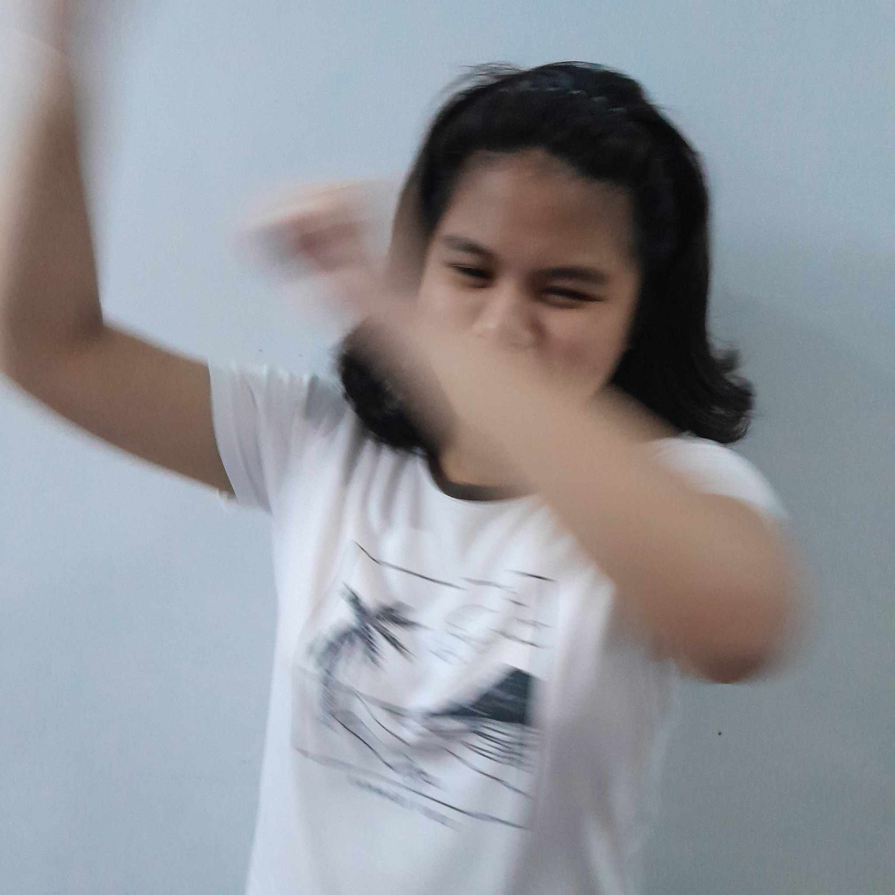
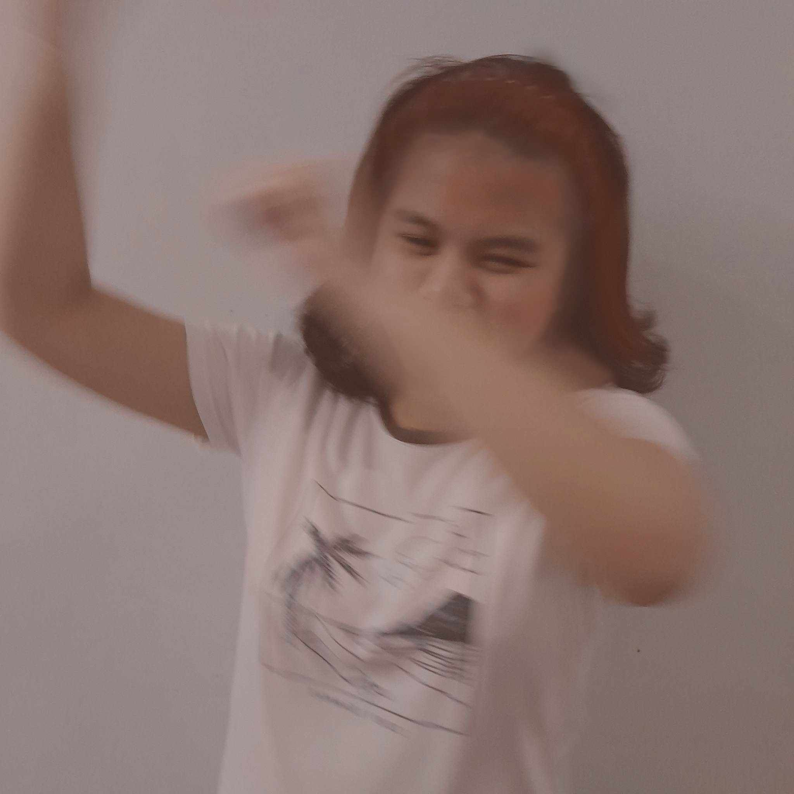

OUR ALUMNI
Meet Our Esteemed Alumni
1. Dr. Elena Cruz (Class of 1990):
- Field: Bioinformatics
- Contribution: Pioneered groundbreaking research in using computational methods to analyze and interpret biological data. Dr. Cruz's work revolutionized the field of genomics and earned her international recognition.
- Field: Bioinformatics
- Contribution: Pioneered groundbreaking research in using computational methods to analyze and interpret biological data. Dr. Cruz's work revolutionized the field of genomics and earned her international recognition.
2. Professor Miguel Santos (Class of 1995):
- Field: Environmental Science
- Contribution: Established a renowned research institute focused on sustainable development and environmental conservation. Professor Santos played a key role in advising government policies on environmental protection.
- Field: Environmental Science
- Contribution: Established a renowned research institute focused on sustainable development and environmental conservation. Professor Santos played a key role in advising government policies on environmental protection.

3. Dr. Sofia Reyes (Class of 2000):
- Field: Astrophysics
- Contribution: Discovered a new class of celestial objects using advanced telescopic technologies. Dr. Reyes became a leading figure in astrophysics, known for her contributions to the understanding of the universe's vastness.
- Field: Astrophysics
- Contribution: Discovered a new class of celestial objects using advanced telescopic technologies. Dr. Reyes became a leading figure in astrophysics, known for her contributions to the understanding of the universe's vastness.
4. Captain Ricardo Madrid (Class of 2003):
- Field: Marine Biology
- Contribution: Led several deep-sea exploration missions, uncovering new species and mapping uncharted underwater territories. Captain Ramirez's work contributed to the preservation of marine biodiversity.
- Field: Marine Biology
- Contribution: Led several deep-sea exploration missions, uncovering new species and mapping uncharted underwater territories. Captain Ramirez's work contributed to the preservation of marine biodiversity.
5. Engineer Isabella Torres (Class of 2008):
- Field: Robotics and Artificial Intelligence
- Contribution: Designed and developed innovative robotic systems for disaster response and mitigation. Engineer Torres' creations played a crucial role in disaster-stricken areas, saving lives and providing support.
- Field: Robotics and Artificial Intelligence
- Contribution: Designed and developed innovative robotic systems for disaster response and mitigation. Engineer Torres' creations played a crucial role in disaster-stricken areas, saving lives and providing support.
6. Dr. Alejandro Banzon(Class of 2014):
- Field: Neuroscience
- Contribution: Conducted groundbreaking research on neurodegenerative diseases, leading to the development of potential therapeutic interventions. Dr. Garcia's work brought hope to those affected by conditions like Alzheimer's and Parkinson's.
- Field: Neuroscience
- Contribution: Conducted groundbreaking research on neurodegenerative diseases, leading to the development of potential therapeutic interventions. Dr. Garcia's work brought hope to those affected by conditions like Alzheimer's and Parkinson's.

7. Ambassador Carla Fernandez (Class of 2017):
- Field: International Relations
- Contribution: Served as a diplomat in key international negotiations, promoting peace and cooperation. Ambassador Fernandez played a pivotal role in mediating conflicts and fostering global understanding.
- Field: International Relations
- Contribution: Served as a diplomat in key international negotiations, promoting peace and cooperation. Ambassador Fernandez played a pivotal role in mediating conflicts and fostering global understanding.
8. Entrepreneur Juanito Rodriguez (Class of 2020):
- Field: Business and Technology
- Contribution: Founded a successful tech company specializing in sustainable solutions. Juanito Rodriguez's company became a leader in green technology, promoting eco-friendly practices in the business world.
- Field: Business and Technology
- Contribution: Founded a successful tech company specializing in sustainable solutions. Juanito Rodriguez's company became a leader in green technology, promoting eco-friendly practices in the business world.